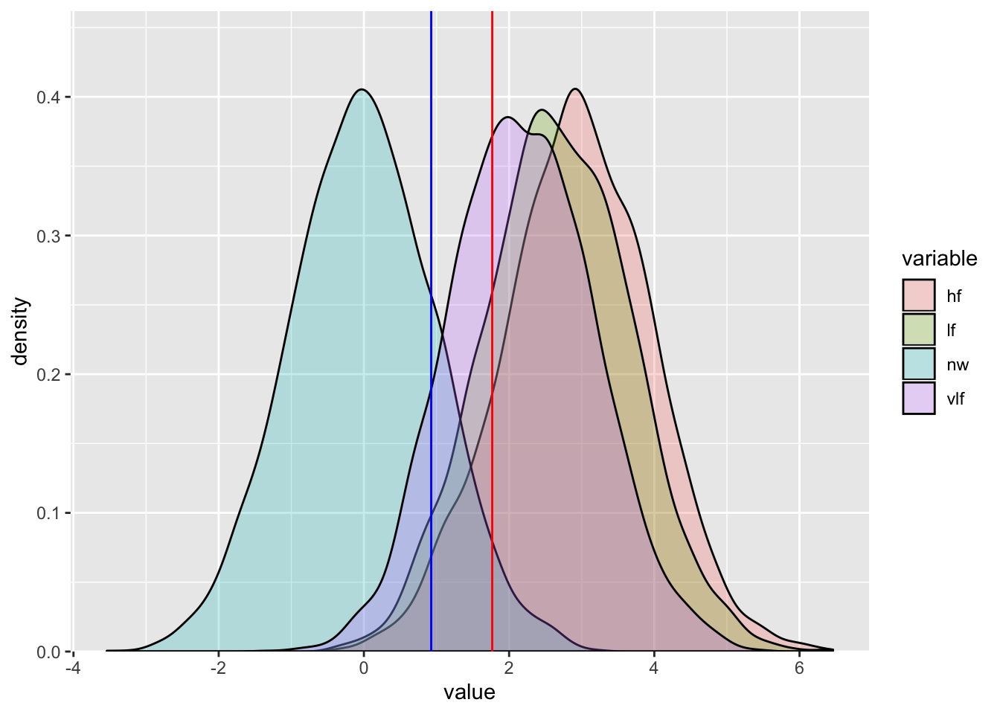

Chapter 6 How to use the PMwG sampler - Signal Detection Theory
Here we demonstrate how to use the PMwG sampler package to run a simple signal detection theory (SDT) analysis on a lexical decision task taken from Wagenmakers et al. (2008). We recognise that it is unnecessary to use the sampler package for a simple analysis such as this; however, we hope this example demonstrates the usefulness of the samplers package.
Stolen from Wagenmakers paper “This is analogous to a signal detection analysis that allows one to disentangle effects of stimulus discriminability (e.g., d0) from those of criterion placement (i.e., b).”
6.1 Description of Wagenmakers experiment
Participants were asked to indicate whether a letter string was a word or a non-word. A subset of Wagenmaker et al data are shown in table 6.1. We have a subject column with a subject id (1-19), a condition column cond which indicates the proportion of words to non-words presented within a block of trials. In word blocks (cond = w) participants completed 75% word and 25% non-word trials and for non-word (cond = nw) blocks 75% non-word and 25% word trials. The stim column lists the word’s frequency i.e. is the stimulus a very low frequency word (cond = vlf), a low frequency word (cond = lf) or a high frequency word (cond = hf). The third column resp refers to the participant’s response i.e. the participant responded word (resp = W) or non-word (resp = NW). The two remaining columns list the response time (rt) and whether the paricipant made a correct (correct = 2) or incorrect (correct = 1) choice.
For more details about the experiment please see the original paper. Is this the correct paper to reference?
| subject | prop | freq | resp | rt | correct |
|---|---|---|---|---|---|
| 1 | w | lf | W | 0.410 | 2 |
| 1 | w | hf | W | 0.426 | 2 |
| 1 | w | nw | NW | 0.499 | 2 |
| 1 | w | lf | W | 0.392 | 2 |
| 1 | w | vlf | W | 0.435 | 2 |
| 1 | w | hf | W | 0.376 | 2 |
| 1 | nw | lf | W | 0.861 | 2 |
| 1 | nw | hf | W | 0.563 | 2 |
| 1 | nw | nw | NW | 0.666 | 2 |
| 1 | nw | nw | NW | 1.561 | 2 |
| 1 | nw | nw | NW | 0.503 | 2 |
| 1 | nw | nw | NW | 0.445 | 2 |
6.1.1 Signal Detection Theory
We assume you have an understanding of SDT so we’ll jump to an explanation of how we can use SDT in the context of the lexical decision task. First, we begin with the distributions for word and non-word stimuli. You can think of these two distributions as the ‘noise’ and ‘signal’ curves, respectively. Each distribution represents the evidence for ‘word-likeness’ and they are assumed to be normally distributed. For the non-word distribution (or the ‘noise’ distribution) we set its mean to 0 and the standard deviation (SD) to 1 (NOTE: it is possible to estimate SD, but we will use 1 in this example for simplicity). We then set the mean for all three word distributions (i.e. very low frequency, low frequency and high frequency) to d' (d-prime).
Secondly, a criterion is set. This criterion is the point at which an individual responds “word” - if the value is above the criterion, or “non-word” - if the value is below the criterion. Given these parameters, one would expect that the “word” distribution would have a higher mean than the non-words, with some partial overlap (for words and non-words which might be difficult to classify). The criterion should then be set somewhere between these means. If a person was biased to respond “word”, they’re criterion would move down. In total, in the simple SDT model, there would be 2 parameters - d’ (the mean of the word distribution) and C (the criterion).

A second example might cover another SDT example with the addition of trial level covariate i.e. analytic solution NA.
References
Wagenmakers, Eric-Jan, Roger Ratcliff, Pablo Gomez, and Gail McKoon. 2008. “A Diffusion Model Account of Criterion Shifts in the Lexical Decision Task.” Journal of Memory and Language 58 (1). Elsevier: 140–59.